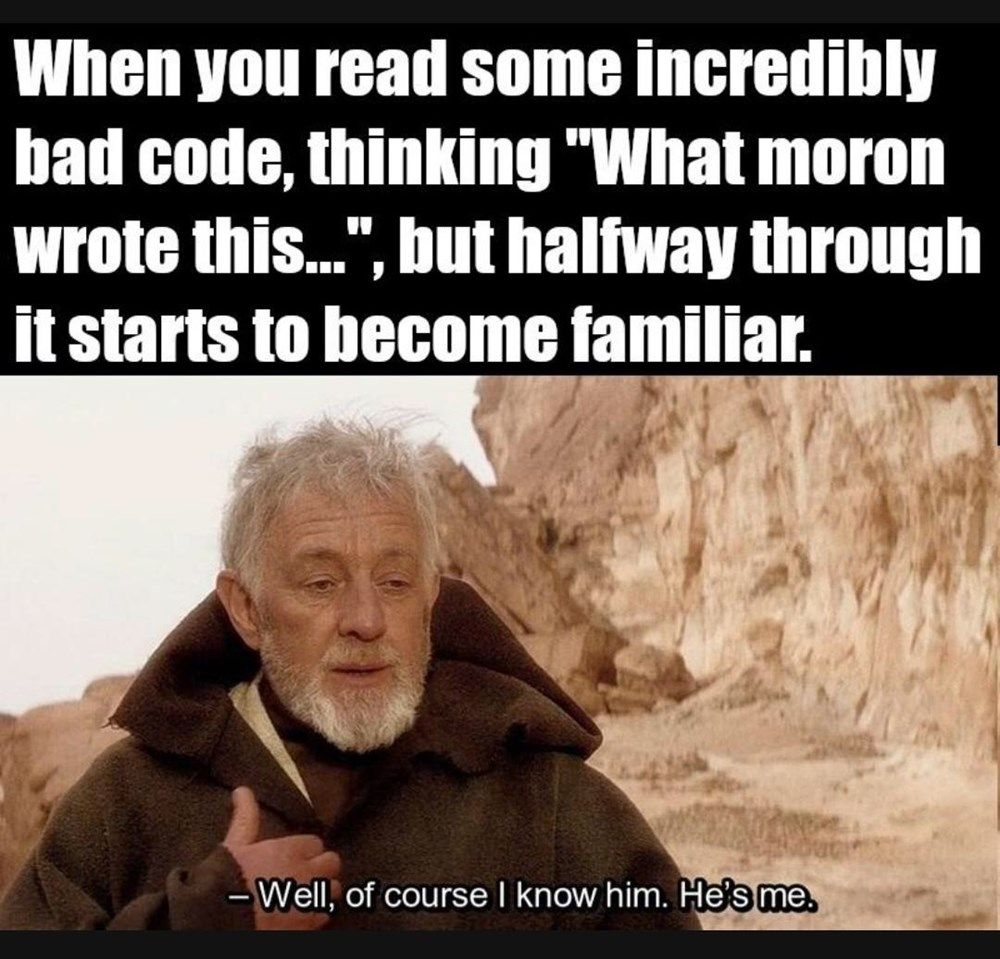

Programming is the art of telling another human being what one wants the computer to do.
-Donald Knuth
Modern web technologies provide a plethora of tools for authoring and publishing technical documentation. Yet, writing documentation is among the least favourite activities for most developers. Not for the acclaimed computer scientist Donald Knuth, however. He has made many contributions to computer-aided documentation, mostly motivated by personal discontent with available tools and techniques.
When Knuth was finishing the second volume of his famous book series The Art of Computer Programming, he was appalled by the quality of the draft prints he received from the publisher. For the first volume, typesetting was still done manually by professional layout designers. By early 1970s the task was delegated to computers, which at that point, were not very good at it. Knuth went on to design Metafont and TeX, which quickly surpassed other typesetting programs of the era, and became the de facto standard for scientific publications.
While Knuth was writing Metafont and TeX, he found that keeping all the information in his head was getting harder as his programs grew more complex. Especially, after he had taken a break from progamming. So, he devised a method to make the job easier by writing programs in a piecewise manner and documenting each piece meticulously (using TeX, of course). He arranged these code snippets (he called them macros) as if they were presented in a book. This way he could refresh his memory by reading the "book" from the beginning, and return to the point where he left off. He coined the term literate programming to describe this methodology, and published another book about the subject.
 This kind of approach might seem overly laborious for regular programs, but I bet all developers can at least relate to the problem. If you leave some code behind for a couple of weeks and then return to it, you likely spend long time figuring out what it was supposed to do. Even if you don't think documentation would help you with this issue, there are other reasons for writing it.
If you have ever written any non-trivial code, you have probably had this experience: you stare at the screen trying to convert your fuzzy ideas to code, but cannot get it together. Usually the best approach is to step away from the computer, and sketch your design to a paper or whiteboard. That design you can then translate to whatever programming language you are using.
If you cannot formulate your idea verbally or visually, it's unlikely you can write it as code either. Writing is thinking, but unfortunately we don't think like computers. For us, it's easier to first describe our solution in natural language. If you methodically follow that practice, you are doing literate programming. It's like test driven development; but instead of writing tests first, you document your code before before writing it. Same idea, different paradigm.
Obviously literate programming isn't as popular as test driven development. One could argue that it never got into mainstream programming at all. Many different reasons have been put forth why this is the case. For most people the biggest threshold is writing itself. Ask any book author or magazine editor; writing clear and readable prose is difficult and tedious.
Another issue that repeatedly comes up, is that tooling sucks. Luckily, this is a problem that we can fix. We already have lot of technologies that help authoring and publishing web pages. Why not take best of them and build new tools that help writing code and documentation together. The ultimate goal is a fully integrated workflow where you can seamlesly build your application together with the documention. We already have interactive notebooks like Jupyter which enable this, so technology is not the biggest obstacle, clearly.
As with testing, it's best to keep the approach practical and not aim for overly ambitious goals. Maybe we should not aspire to write top-quality books or publications but rather use these tools to communicate different things to different audiences. If you write just for yourself (solo developer project, for example) you can keep the bar real low. Other target audiences might include users, developers, testers, UX designers, sysadmins, devops engineers, or other stakeholders. By thinking what information you want to convey and to whom, it's easier to keep the scope of your documentation more concise.
The best part is that literate programming and web technologies allow you to integrate documentation to your product in new ways. That is the biggest opportunity of the paradigm and the reason why there is still space for innovation.
Here are some examples, how you can use LiTScript in your projects. Some use cases resemble "traditional" literate programming workflow, the others use the LiTScript more like a web build toolkit.
Most of the time you probably use LiTScript to document your TypeScript modules. When you add headers and sections to your code, you often notice that you could rearrange your classes, functions, or methods a bit more logically. You group related functionality under their own subsections and write short descriptions what they are doing. You not only get nice documentation as a result, but also make your code clearer in the process.
Web projects consist of multiple file types. You might also want to create documentation for your CSS files or even JSON configuration files.
When you are writing libraries, you usually need some way to test them. Typically, you write unit tests or some simple testbench but LiTScript provides an alternative option. You can use the web site generated by LiTScript as your testbench. This is particularly handy when using the serve mode. You can see the effect of your code changes immediately.
LiTScript provides the easiest way to maintain specification or architecture documentation. The documentation lives in the same repository with your code making it easy to see when it needs updating. You'll publish the latest version to every time you commit your code.
As LiTScript compiles and bundles your code and assets it can be used as a general build tool à la Vite or Rollup. In fact, LiTScript can be seen as a light JS framework (like Astro) when you add templates and web componenents in the mix. It's very unopinionated tool, so it can bend to multitude of usage scenarios.